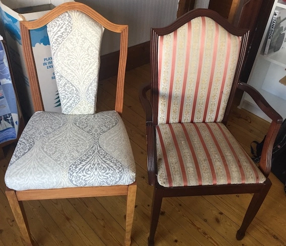
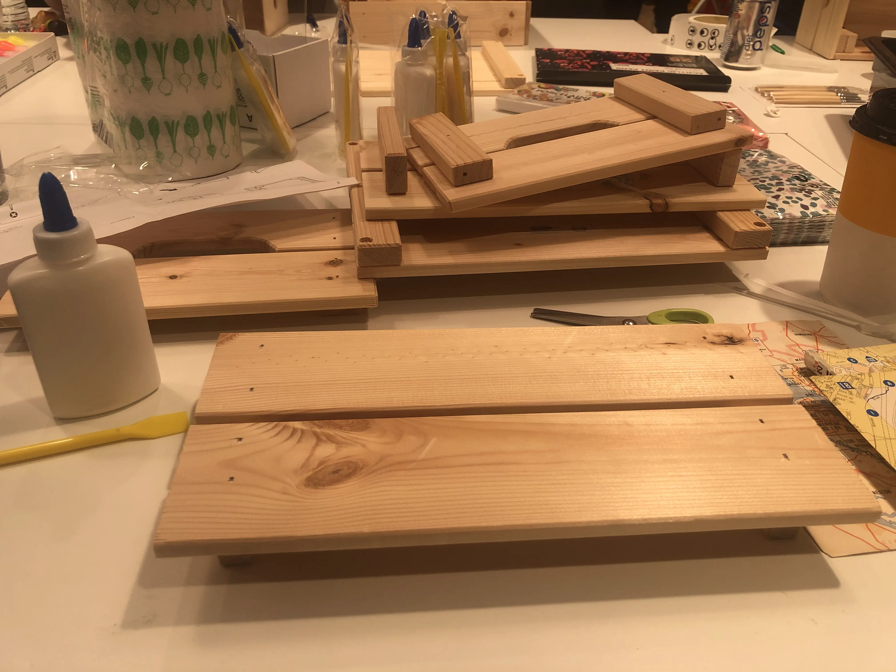
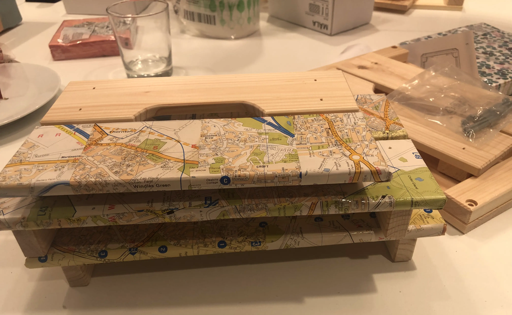
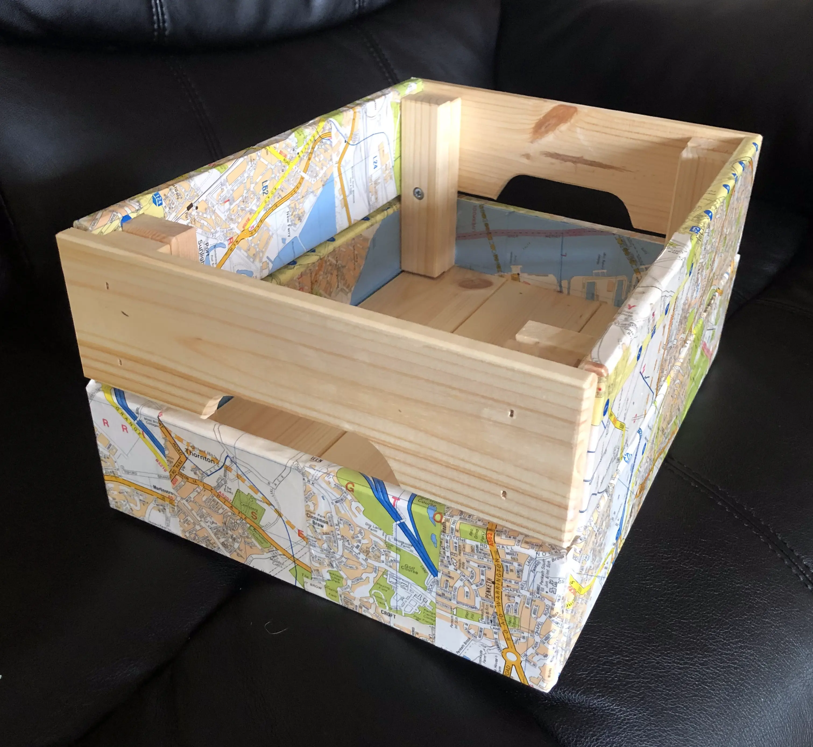
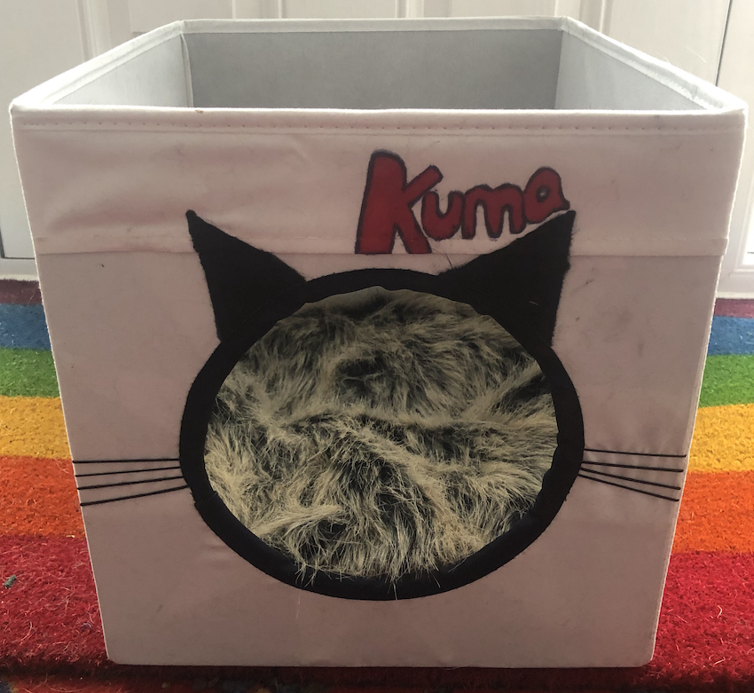
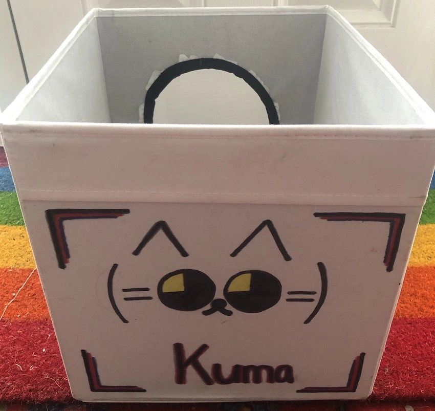

Relove, Reuse Workshop
The Relove, Reuse Workshop took us into creative mode once again.
It's easy to fall out of love with a piece of furniture or accessory. Fashions might change. You might have updated your paint or wallpaper. You might just have seen something somewhere that you really must have.
But are your existing furnishings still serviceable? Is it just a problem with aesthetics? Do you really need to throw things out or find a new home for them? Maybe with a bit of TLC and creativity you could enjoy their presence in your home once more.
That was the premise behind the Live Lagom Relove, Reuse Workshop.
We were just decorating basic storage items, to personalise them, and giving a fresh look to some slightly shop-soiled stuff. However, we all had further projects in mind for revamping things in our homes.
I'm not averse to hauling old furniture home from charity or second-hand shops in order to give them a makeover. When I decide to risk my thumbprints and device logins with a bit of sanding, I'll be able to share transformations of a £5 occasional table and a £20 chest of drawers. I have already saved pounds by upcycling other occasional tables, a dining room table and dining room chairs.
For the chairs, as hopefully you can tell from the picture, I stripped the heavy mahogany-coloured varnish and replaced it with a oak-coloured stain. The dirty, red and cream striped upholstery was replaced with grey fabric. For good measure we made the seats a bit more padded. There were six chairs and it took quite a bit of time, but definitely worth it.
So what did we do in the workshop?
We were all presented with a flat-packed, wooden storage crate. In addition, we were invited to choose items from a trolley full of glass jars, fabric storage cubes, wooden filing boxes, hangers and much more. We'd been advised to bring decorative paper, but there were were all sorts of paints, pens and other decorating tools on offer. The artists in the group started drawing and painting. Others tried etching or covering items in paper.
I started with the storage crate and an old A to Z map book.
 
The A to Z book was pulled apart. I glued pages onto the side pieces of the wooden crate. No attempt was made to carefully align the pieces. I'd still be there glueing if I'd tried that!
I let the glue dry, varnished the pieces to make the paper coating more durable and assembled the parts into a crate. I have to admit I love it!
I also took a fabric cube storage box, but didn't have time to decorate that during the workshop. I intended the cube as a place for our cat, Kuma, to slumber rather than have her diving into underwear drawers. So, as the cube will be located in a child's bedroom, I have commissioned my artistic offspring to personalise the object. If that ever happens, I'll share the results here (and Kuma's verdict).
Update
 
I waited a week, but in the end I took the box and decorated it myself!
It was harder than I thought to carve a circular hole in one side. There's a very tough layer beneath the fabric. But I got there in the end and then sewed ribbon around the edge.
Next step was to dig out the permanent markers to draw on some ears. Thin cord sewn through the box was perfect for adding whiskers. The front of the box was complete.
Given the Kallax unit which was going to house the box is positioned as a room divider, I thought I'd better decorate the back of the cube as that would be visible too. My children like anime so I eventually hit on the idea of drawing a Japanese cat emoticon. Far less marker pen required than the cat silhouette than I'd originally considered.
I think it looks OK. Kuma wasn't too happy that the fur fabric lining had been 'investigated' by a dog. I say investigated, but savaged is probably a better description. Too much canine scent anyway and the soft, furry bed has been covered up. Hopefully she'll get used to it.